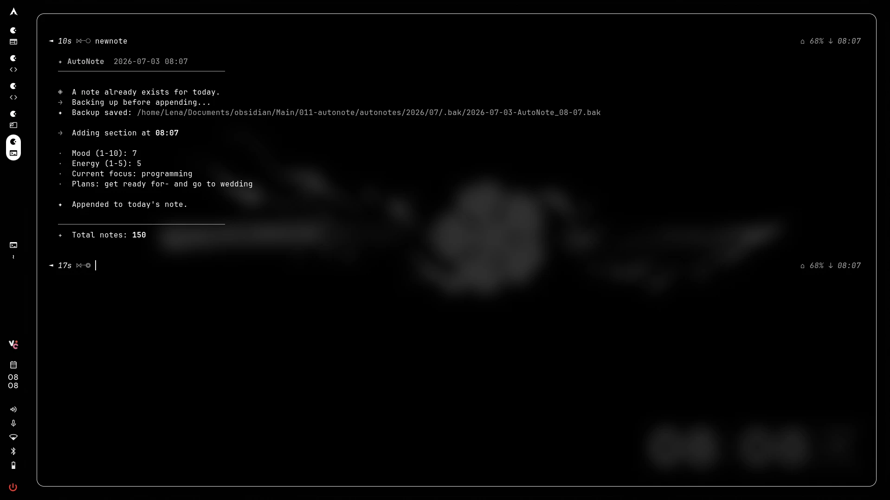

Private / Non-Commercial Project
Autonote Systems
This project was created as a personal day tracker to see how different lifestyle choices impact sleep and happiness.
Back To PortfolioDevelopment
Technologies
About
Autonote Systems
AutoNote is a small suite of bash scripts for tracking mood and energy over time as plain numbers,
run straight from the terminal with no GUI. Everything is written to Markdown files in an Obsidian
vault, under a configurable path that defaults to Documents/obsidian/Main/011-autonote. I built it
to track how lifestyle changes and medication adjustments were actually affecting my day to day, so
I could see what was helping and what wasn't instead of just guessing.
The suite has three parts. newnote.sh creates the note for the current day, prompting for mood
(1-10), energy (1-5), current focus, and plans, and writing it out as a Markdown file with YAML
frontmatter plus a body for freeform notes and links. It can be run more than once a day, in which
case it backs up the existing note and appends a new timestamped section rather than overwriting
anything, though only the first entry of the day is what weeklystats and monthlystats actually read.
It also maintains a running index file with a log of every note created and a total count.
weeklystats.sh and monthlystats.sh both work the same way, just over different windows: they walk
through each day's note, pull the mood and energy values out of the frontmatter, and generate a
summary file with overall averages, a line chart plotting both values over the period, and a
breakdown table. Weeklystats runs Monday to Sunday and includes a per-day note list; monthlystats
covers the full calendar month and breaks it down week by week, along with flagging the best and
lowest mood days. Both accept an optional offset argument to look back at a previous week or month
instead of the current one.
All three scripts share the same terminal styling, with colored status messages and clear errors if
the configured paths don't exist, so failures are obvious rather than silent.

Running newnote for the second time that day — note the append behavior